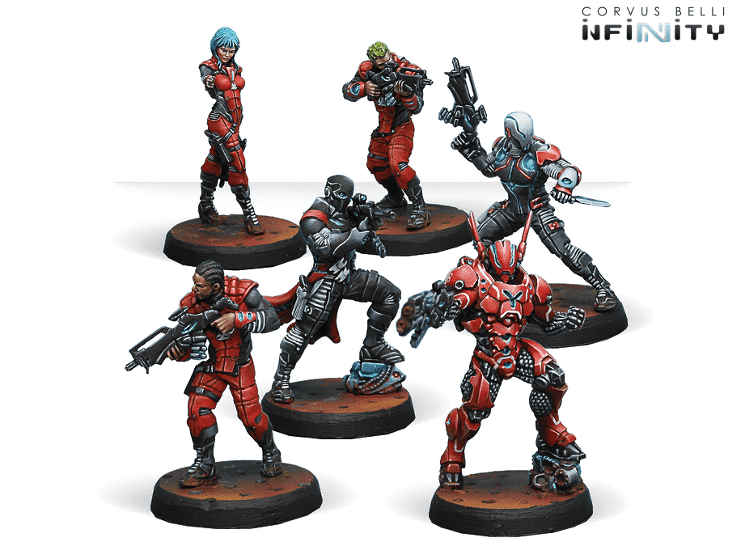
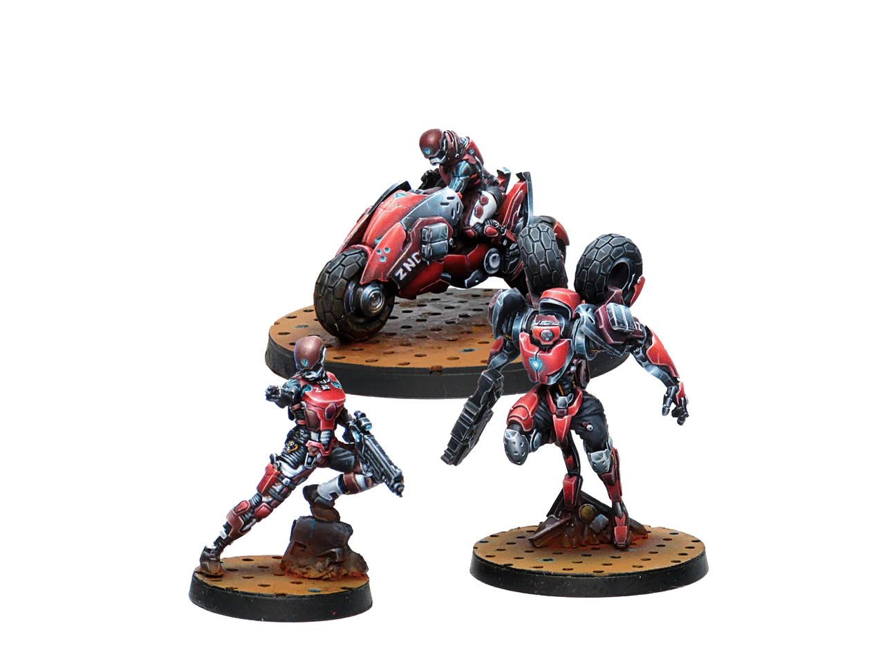
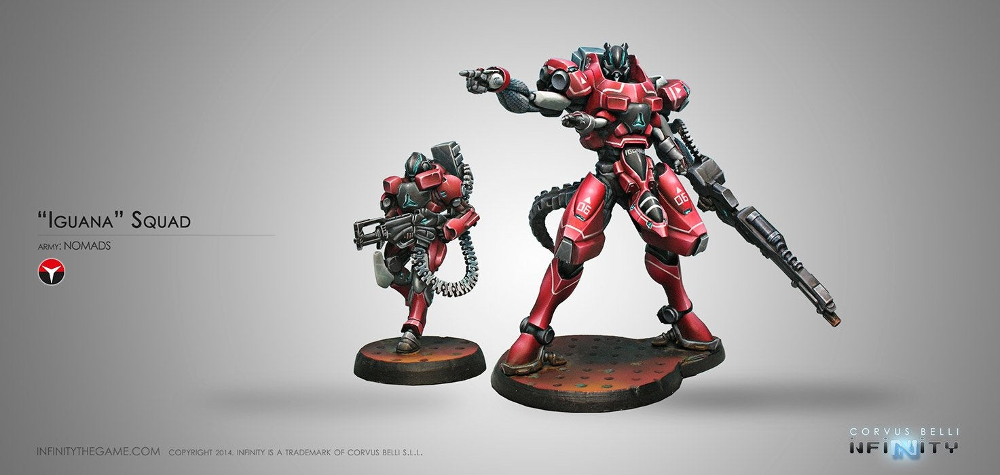
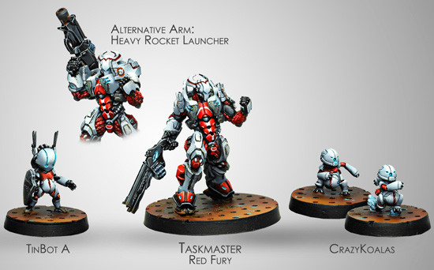
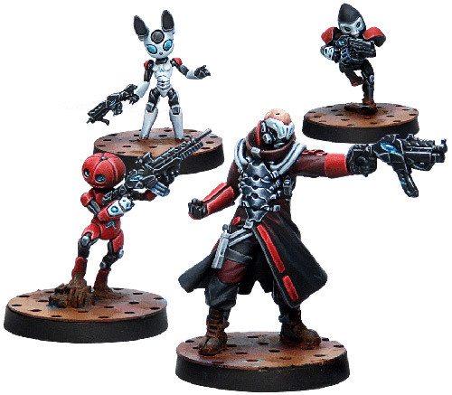
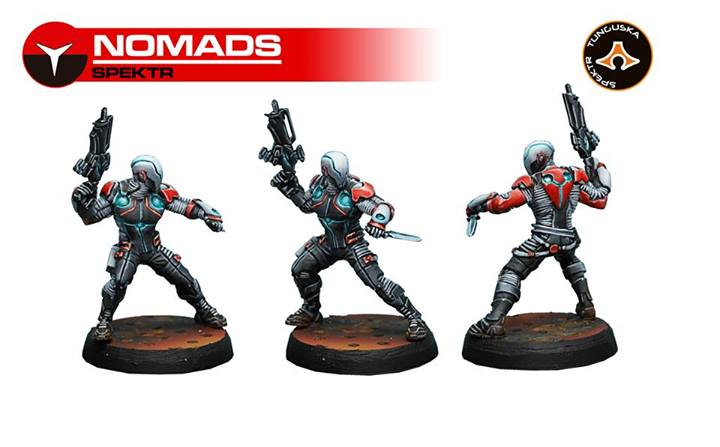
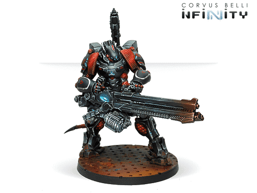

Nomads Starter Pack
Fast Offensive Unit
Iguana
Taskmaster, Tinbot, and Crazy Koalas
Puppetactica: Puppet Master and Puppet bots
Spektr
Szalamandra
About the Nomads Faction and sub Factions
Szalamandra 360 view